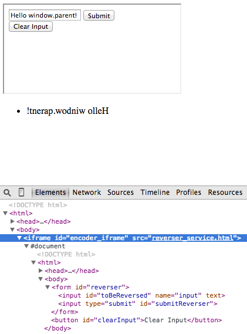

1. JavaScript and Ajax Questionnaire
Enter correct answers in the form at A-plus.
Enter correct answers in the form at A-plus.
This exercises involves using .postMessage() to send messages from an iframe to the parent document. You are to write a simple 'service' in reverser_service.html that takes a string, reverses it and sends it as a message to the document that contains reverser_service.html as an iframe.

user_actions.html is given to you so you can test your solution with that. Note that you should not rely on any modifications on user_actions.html, the grading will be done using the given file. The messages should have a payload attribute that contains:
#toBeReversed reversed if the #reverser form was submitted.#clearInput was clicked.
//Example message
msg = {};
msg.payload = 'elloH'; // (1) #toBeReversed contained 'Hello' and user submitted #reverser
msg.payload = 'INPUT CLEARED' // (2) User clicked #clearInput
Note that you can assume that the grader will also have 'lib/jquery-1.11.1.min.js'.
reverser_service.html and create the necessary elements.window.parent.
Write the code inside the HTML file.Add, commit and push your new files and possible changes to the Git as in round 1.
Finally, just copy and paste your GitLab project's URL to A-plus. The file we will check
is exercises/06_javascript_ajax/reverser_service.html.
Flickr is a photography site where people can share their photography and meta data like tags or location. They have an open photo feed in several formats including JSONP. In this exercise you will fetch photo data from the feed and dynamically create related image elements in the DOM.
Start by creating new search.html and search.js files.
Create an empty HTML5 page and include the jQuery library and your own JavaScript
file after it. For grading you must include the jQuery like this:
<script src="lib/jquery-1.11.1.min.js"></script>
Next, add a form element which contains an input type=text element with id tag
and input type=submit element with id search. This form is used to query the feed with the entered tag name. The form
can look for example like in the image below. Furthermore, add an empty element with id images
for adding the images later on.
![Example query form]()
Note that you need to always wait for the HTML DOM to be completely loaded and prepared before looking for any DOM elements. Check jQuery examples for document ready.
Now using jQuery, select the form and attach an event listener to submit event.
In the handler function remember to prevent the default action so that the page is not reloaded
when the form is submitted. If the page is reloaded the entered tag and page state will disappear.
You can use console.log("remarks", somedata); to debug how your code works.
The Flickr JSONP feed has following URL structure:
http://api.flickr.com/services/feeds/photos_public.gne?format=json&jsoncallback=replacethistoo&tags=aalto
To build the request URL get the entered tag value and URL-encode it. See exercise 1 questionnaire for making the JSONP request. Some useful functions: on, event.preventDefault, val, encodeURIComponent, jQuery.getJSON
At this point you should be able to receive a data object requested from the Flickr feed and for example log
the contents. Let the received feed object be in a variable data. The photos are in an array
data.items that you should loop through. Each photo object has an URL for a small image at
data.items[i].media.m and a title at data.items[i].title. You can test this part by logging
the values for each photo.
Next, you will create img elements inside the empty images container element to display
the images. Each image must have alt attribute containing the title value and src
attribute containing the image URL. The jQuery function append
can take raw HTML to add inside the selected element. Note that the form can be submitted multiple times with
different tag queries and old feed images should be removed before appending new ones.
Think how you could manage the img elements without writing HTML into your JavaScript code. After all, it would be nice to have all the different elements represented in the "template".
This would be a good chance to try some CSS styles. It would be hard to automatically judge your styling choices so no points are awarded. You can for example create a framed picture wall by adjusting image flow, spacing, borders and background.
Please make sure that you have used the required id:s (tag, search, images)
in correct elements.
Add, commit and push your new files and possible changes to the Git as in round 1.
Finally, just copy and paste your GitLab project's URL to A-plus. The files we will check
are exercises/06_javascript_ajax/search.html and exercises/06_javascript_ajax/search.js.